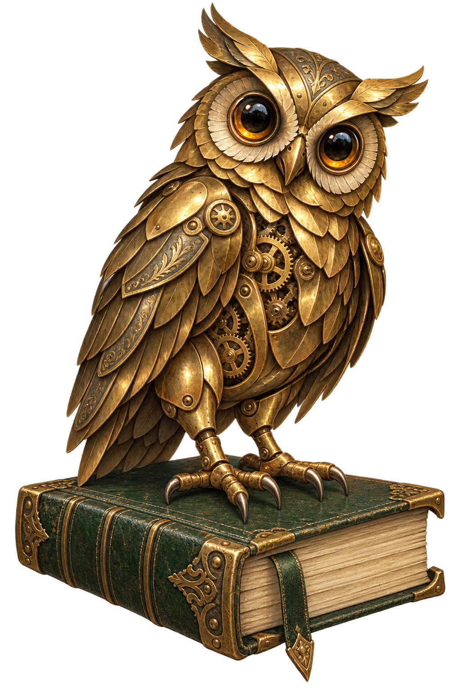

Comparative analysis of HEART and SLIM
Human reliability assessment in the Boeing 737 MAX accident case study. Project leader.
Read the publication ↗An engineer's curiosity. An artificer's spirit.
I’m Zaki, a Mechanical Engineering graduate exploring process safety, research, and AI-powered tools.
The person behind the workshop

I am a Mechanical Engineering graduate from Universitas Pertamina, with a focus on process safety, reliability, and practical data-driven decision support.
My work connects engineering analysis with software: from machine-learning models for n-Hexane hazard zones to AI applications that help people analyze documents and automate reporting.
That curiosity has taken me into a drilling-equipment workshop, university laboratories, published research, and independent software projects. I enjoy making complex questions easier to understand, test, and act on.
Graduated 20 August 2026. GPA 3.88/4.00, Cum Laude. SUN UP Scholarship recipient.
Coursework: Fluid Mechanics, Thermodynamics, Turbomachinery, Probability & Statistics, K3/HSE, Maintenance Management, Mechanics of Materials, Mechatronics, and Engineering Design.
Outstanding Student Distinction, 2022.
From the workshop
Research, engineering, and software brought to life. Open an image to explore the story behind it.
More things I have designed, built, and investigated.
Built for the joy of figuring things out. A home for my personal tools, interests, and experiments.

A journey through workshops, laboratories, classrooms, and communities.
Aug-Sep 2025
Mechanical Engineering Intern · Workshop & Maintenance Division
2023-present
Laboratory Teaching Assistant
2023-2024
Universitas Pertamina
2024-2025
Head of Student Department
Supervised mentoring, public outreach, and entrepreneurship programs while coordinating stakeholders and event committees.
2023-2024
Graphic Designer
Designed social media, publication, and event visuals for MIRAI UP activities including MIF and PERISMA.
6 months
Graphic Design Volunteer
Created sustainability communication assets; joined renewable-energy conferences, solar plant visits, and waste-management education.
The tools and methods I use to turn questions into working solutions.
Applied in: n-Hexane thesis · Excel calc suite
Applied in: PDSI internship · HRA publication
Applied in: thesis dashboard · CNC failure ID · energy study
Applied in: HVAC & LCA · HERO Helmets · org design work
Applied in: AntiDeadline.ai · MWT bot · prompt.aja · thesis web app
Research shared beyond the workshop.
Human reliability assessment in the Boeing 737 MAX accident case study. Project leader.
Read the publication ↗First-author research combining forecasting, regression, Monte Carlo simulation, and sensitivity analysis.
Read the publication ↗Certifications and registrations behind the AI, data, and research work.

National certification
Assessed as competent by LSP Digital Kreatif Solusi under the BNSP national certification scheme. Competency assessment: 27 April 2026; certificate issued: 25 May 2026.

AI engineering
Ruangguru Engineering Academy+ AI Engineering Bootcamp · awarded with grade A.

Data analytics
DQLab Data Analyst with SQL & Python on Google Platform.

Spreadsheet analytics
Foundation for the reusable Excel engineering calculation workflows.

Research recognition
Copyright Registration No. 001135780 (Kemenkumham RI) for the Perovskite halide fluorescent taggant feasibility study.
Engineering opportunities, research collaborations, and useful things worth building.
If you are working on process safety, reliability, or engineering data problems, or hiring for them, I would like to hear about it.